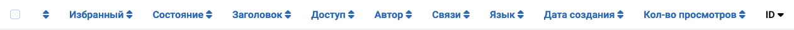

Цель¶
Заголовки столбцов появляются в представлениях списков, чтобы указать характер информации в этом столбце. Заголовки варьируются в зависимости от компонента. Многие заголовки столбцов могут использоваться для сортировки списка по этому столбцу, но это не всегда так. Например, в представлениях списка категорий четыре столбца Состояние не используются для сортировки, так как все элементы в этих столбцах находятся в одном состоянии.
Некоторые примеры¶
Заголовки столбцов списка статей¶

Заголовки столбцов списка категорий¶

Заголовки столбцов списка пользователей¶

Сортировка по столбцу¶
Чтобы изменить порядок списка, выберите значок сортировки столбцов. В столбце, который не используется для сортировки, это двойной значок вверх/вниз (). Для столбца, который используется для сортировки, это либо значок вверх (), либо значок вниз (), указывающий текущее направление сортировки: по возрастанию или по убыванию.
Некоторые Общие Заголовки¶
- Флажок Чтобы выбрать все статьи, установите флажок в заголовке столбца. Кнопка на панели инструментов «Действия» становится активной. Действие может быть применено к элементам, видимым на странице. Оно не применяется к элементам на последующих страницах, которые не видны.
-
Упорядочивание Вы можете изменить порядок статьи в списке следующим образом:
- В параметрах фильтра ограничьте список элементами для упорядочивания, например, элементами на выбранном языке или элементами по выбранному автору.
- Выберите значок упорядочивания в заголовке первого столбца, чтобы сделать его активным.
- Выберите один из значков вертикального многоточия , которые появляются, когда упорядочивание активно, и перетащите его вверх или вниз, чтобы изменить позицию этой строки в списке.
- Заголовок или Имя Название элемента обычно является ссылкой на страницу Редактирования этого элемента.
- ID Уникальный идентификационный номер для этой статьи. Он не может быть изменён.
Переведено с помощью openai.com